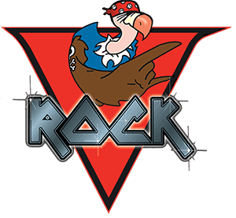

Cocoteo FM

Rádio: Cocoteo FM
Fonte da foto de Bad Bunny

Rádio: Cocoteo FM
Fonte da foto de RaiNao
Conheça as rádios anunciadas pela Rockstar Games, ouça as músicas no Spotify e veja os artistas que apresentam cada estação.
Em 8 de outubro de 2026, a Rockstar apresentou seis estações em sua página de música de GTA VI. Confira os artistas que dão voz aos apresentadores e as músicas ouvidas nas prévias oficiais.
As faixas abaixo são uma seleção das prévias; a programação completa ainda não foi divulgada.
Ir para: Músicas e Spotify | Fotos dos apresentadores | Informações anteriores
| Logo | Rádio e gênero | Apresentadores | Músicas — Spotify |
|---|---|---|---|
| Cocoteo FM Música latina: bachata, merengue, dembow e reggaeton |
Bad Bunny — El Martillo RaiNao — La Gata Ver fotos |
|
|
| Back Country Radio Country |
Morgan Wallen — MW Lana Del Rey — Delta Dawne Jeremy Dufrene — Mud Dog Mike — repórter e participações Ver fotos |
|
|
| AfroBank FM Música africana, amapiano e 3-step |
Burna Boy — Burna Palms Trax — Palmsy Ver fotos |
|
|
| The Chamber 106.6 Metal |
Kerry King — DJ Kerry Tom Araya — DJ Tom Ver fotos |
|
|
| Flash FM Pop |
Robyn — Robyn Alex Consani — Alex Ver fotos |
|
|
| Dirty South Classics Rap e hip-hop do sul dos Estados Unidos |
Trick Daddy — Trick Trina — Trina Ver fotos |
|
Conheça os artistas e as personalidades que dão voz aos locutores de Leonida. Os nomes usados no jogo aparecem nas legendas.


Atualizado em .
Esta lista preserva as informações anteriores da página, baseadas em vazamentos. As associações entre músicas e estações nesta tabela não representam confirmação oficial. Back Country Radio e Dirty South Classics também estão na seleção oficial acima.
| Logo da Rádio | Nome da Rádio | Faixas associadas pela comunidade |
|---|---|---|
|
 |
V-Rock |
|

|
Circoloco Records Radio |
|

|
Back Country Radio |
|

|
Dirty South Classics |
|

|
Honey FM |
|

|
Stockyard FM |
|

|
Symphony FM |
|

|
Radio ON.U |
|
As estações de rádio são uma parte fundamental da atmosfera de Grand Theft Auto desde os primórdios da franquia. Elas ajudam a construir a identidade cultural de cada cidade e época representada nos jogos.
A lendária V-Rock é uma das rádios mais antigas e famosas da franquia:
Diferente de estações puramente fictícias, a CircoLoco representa uma fusão direta da Rockstar com a indústria musical real:
Com a ambientação baseada no estado da Flórida (Leonida), novas rádios foram criadas para refletir a cultura local: